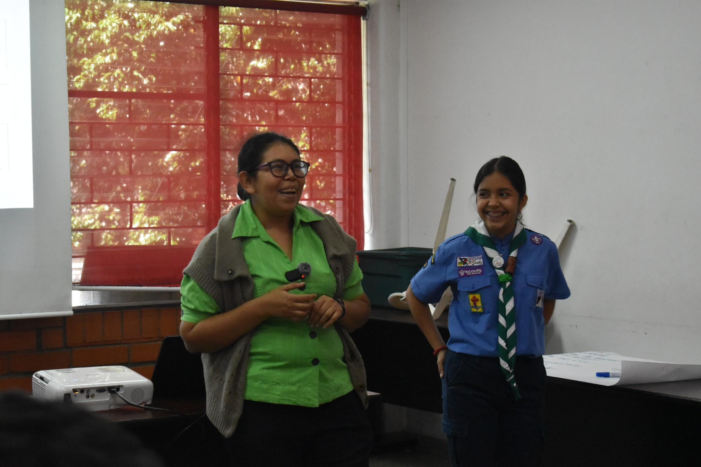
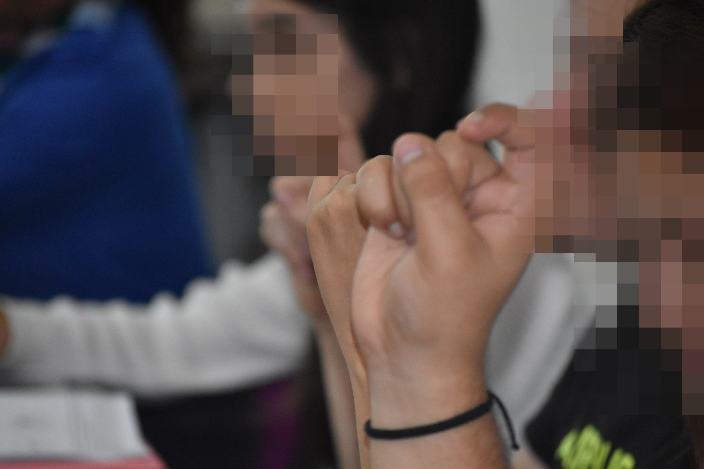
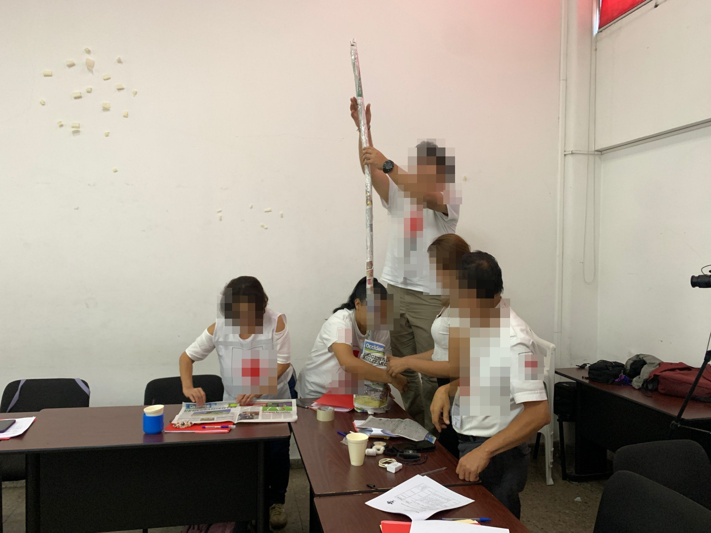

Movimiento Scout · Abril – Julio 2025
Un Poco de LESSA
Proyecto que lideré para que voluntarios de la Cruz Roja aprendan Lengua de Señas Salvadoreña y puedan comunicarse con personas sordas durante una emergencia.
- Material de referencia accesible para consultar en campo.
- Talleres impartidos con una instructora calificada.
- Formación de pares para que los mismos voluntarios continúen los talleres.
20 beneficiarios
38 horas de servicio
ODS 4 · 10 · 17
Ver en Scouts ODS